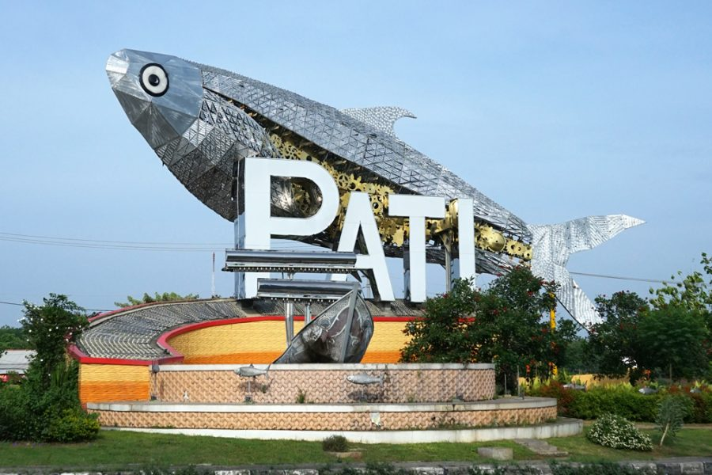
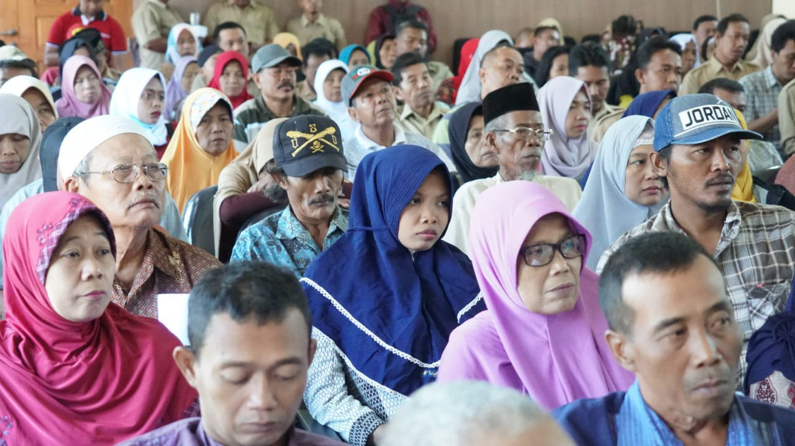
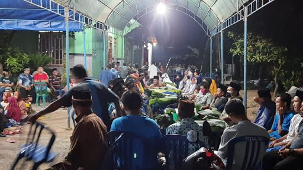

SISTEM INFORMASI GEOGRAFIS
PEMETAAN KEPADATAN PENDUDUK DI KABUPATEN PATI
Latar Belakang
kepadatan Penduduk merupakan suatu masalah yang tidak dapat dihindari di berbagai wilayah kota maupun negara penyebab utamanya adalah jumlah penduduk yang terus meningkat setiap tahunnya dan berbanding terbalik dengan jumlah lahan/wilayah yang tersedia, kabupaten pati memiliki 21 kecamatan yang berbeda-beda tingkat kepadatan penduduknya Dengan adanya SIG ini, diharapkan dapat memberikan informasi dimana wilayah kecamatan di Kota semarang yang memiliki tingkat kepadatan penduduk tinggi maupun rendah. Sehingga dengan adanya informasi tersebut dapat dijadikan sumber dalam berbagai perencanaan baik seperti bagi pemerintah untuk pemerataan penduduk maupun bagi pemilik usaha dalam mengembangkan usahanya.
Kabupaten Pati
  